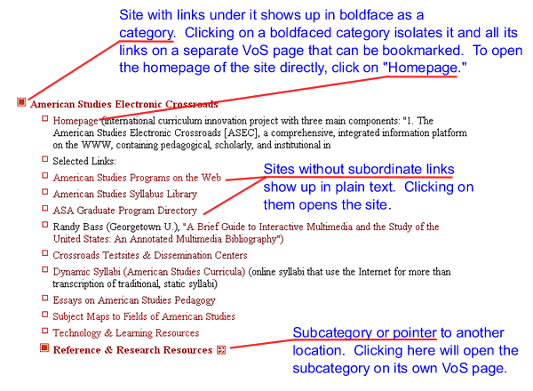
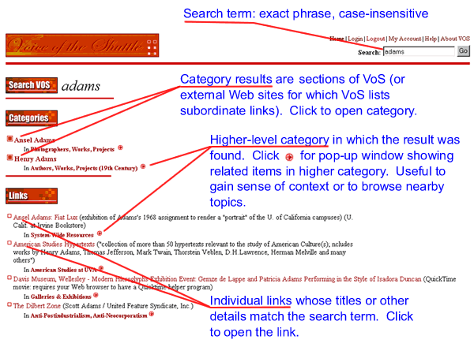

VoS
Help Page
Navigating & Bookmarking VoS

The original version of VoS consisted of large, static
Web pages on which links were organized within a fixed hierarchy of categories
and subcategories. The new VoS is built upon a database that holds information
in individual, modular records and constructs the apparent relation of information
items "on-the-fly" as the user requests it. This means that there
is immense flexibility and control over how information is categorized on the
site. The implications for navigating and bookmarking include the following:
- By default, we have set up the links on the VoS Home
Page to serve up the site in large chunks similar to the pages on the
original VoS—for example, Literary
Theory or English
Romantic Literature. But in fact any information item on the site that
holds sub-items within it (what we call a "category," indicated
in boldface) can be isolated on its own
page with all its subordinate items. Just click on any category and it becomes
its own page that can be bookmarked or linked to. So, for example, if you
are building a Web site for a course on Gothic literature, you can now link
to The Gothic
as its own page (whereas on the old VoS you would have had to bookmark or
link to a specific position on the larger Romantic literature page.
- Some boldfaced categories (meaning anything
that has sub-levels of content) are the titles of individual sites or home
pages on the Web from which VoS has also linked to suhpages. On the old VoS,
clicking on the title of the site would bring the user directly to that site.
But in the new VoS, clickiing on the title of the site (in its role as category
title) simply isolates that category and its subordinate links on its own
page. To go directly to the home page of such a site, click on the link titled
"Home Page" (example).
- Do not be intimidated by the complex nature of the URLs for particular sections
of the new VoS. For example, the category titled "Politics of the Net"
within the Cyberculture page has the URL: http://vos.ucsb.edu/vos/browse.asp?id=2710#id2082.
You can bookmark or link to this URL. The category will be there the next
time you return, though its particular content may have changed depending
on what has been added or deleted from our database.
 |
|
Searching VoS

VoS Search is case insensitive and finds matches or
partial matches for exact strings. (Boolean searching is not yet implemented.)
Word thus matches word, words, swords,
and Wordsworth. Search is limited to ~100 entries per result set.
Contributing to VoS
Anyone with a link to suggest can contribute to VoS. To add a link, navigate in VoS to the particular page, or category on a page, that is relevant and click on "Suggest a Link" for that page. Follow the instructions on the form that appears. Suggested links appear on the regular pages after being reviewed by VoS editors. (The VoS editorial staff retains the right to edit suggestions as well as to delete inappropriate suggestions.) Currently, users can only suggest one location in VoS for a link. Use the "notes" field in the form to suggest to the VoS editors that a link be cross-referenced in other areas of the site. (Please do not submit the same link twice in different locations, since this creates duplicate records in our database.)
Technical Info about the Site
The new VoS holds its data—categories, links, descriptions,
and other information—in a SQL Server 2000 database that developers add
to and revise through Web forms. Macromedia's UltraDev4 program is used to create
the "middleware" programming (in this case, ASP2.0 and VBScript) that
connects the database to the Web. When a user calls on the new VoS, the database
in the background generates a page of data "on the fly" based on the
latest records and the user's exact request. (Credits
for technical development of the site)